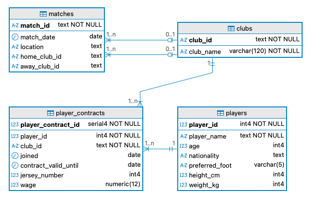

01 CMPU 2007 Databases 1 – Lab 3
In this assignment, you will create a relational database based on an Entity Relationship Diagram (ERD). Then, you will modify the database using SQL commands.
If you are experiencing issues with DBeaver and PostgreSQL installation, please use online tools like OneCompiler or DB Fiddle (ensure you select PostgreSQL in the top left corner) to complete your lab.
02 Creating and modifying the database
Consider the following ERD:

In one unique SQL file, answer the following requests. Make sure you add comments to your script:
Request 1: Provide the Data Definition Language (DDL) script to show the implementation of the database presented in the ERD.
Request 2: Add a bonus column to player_contracts with a default of 0 and a non-negative check.
Request 3: List the name and age of players whose nationality is Irish OR English. Make sure you rename the columns in the output as “Player’s name” and “Player’s age”.